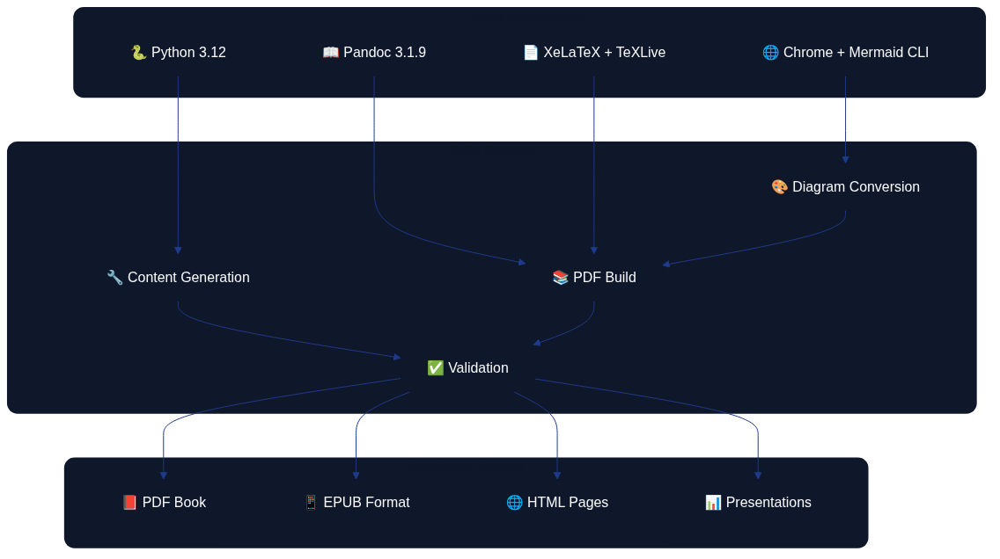

Appendix B: Technical Architecture for Book Production {.unnumbered}
This appendix describes the technical infrastructure and workflow that produce, build, and publish "Architecture as Code". The system is a practical demonstration of Architecture as Code principles, showing how code defines and automates the entire book production process.

The first diagram shows how source materials (Markdown files, diagrams, scripts, and configuration) flow through version control and GitHub Actions.

The second diagram illustrates the build environment, processing steps, and the various output formats produced from the source materials.
File Organisation and Naming Conventions
Book content is organised in 31 Markdown files within the docs/ directory, where each file represents a chapter or appendix:
docs/
├── 01_introduction.md # Introduction and vision
├── 02_fundamental_principles.md # Fundamental concepts
├── 03_version_control.md # Git and version control
├── ... # Technical chapters (04–21)
├── 21_digitalisation.md # Digitalisation strategy
├── 23_soft_as_code_interplay.md # Interplay between soft disciplines
├── 24_best_practices.md # Methods and lessons learned
├── 25_future_trends.md # Future trends and development
├── 27_conclusion.md # Conclusion
├── glossary.md # Terminology
├── about_the_author.md # Author information
├── 30_appendix_code_examples.md # Technical examples
└── appendix_b_technical_architecture.md # This appendix
Markdown Structure and Semantics
Each chapter follows a consistent structure that optimises both readability and automated processing. The template below demonstrates how headings, diagrams, lists, and code samples are arranged.
# Chapter Title (H1 – creates a new page in the PDF)
Introductory text with a short description of the chapter’s contents.

*Caption that explains the diagram content.*
## Main section (H2)
### Sub-section (H3)
#### Detail section (H4)
- Bullet points for structured content
- Code examples in fenced code blocks
- References and sources
This layout ensures that readers can skim the content quickly, while the build pipeline can reliably transform every chapter into the desired publication formats.
Automated Content Generation
The system uses generate_book.py to generate and update chapter content automatically:
- Iterative generation: Creates content in controlled batch processes.
- Mermaid integration: Automatically generates diagram placeholders.
- Consistency management: Keeps structure uniform across all chapters.
- Version control: Tracks every change through Git.
Alignment with the Architecture-as-Code project
The official Architecture-as-Code (AaC) repository describes the initiative as an open-source toolkit for capturing architecture definitions as YAML and turning them into validated, executable assets through a command-line interface that keeps architectural intent close to delivery workflows (AaC Open Source Project). This self-definition mirrors the book production platform: Markdown specifications, diagram sources, and automation scripts sit together in version control so that architecture knowledge is expressed and evolved through code.
Plugin-driven extensibility
AaC emphasises that every capability is delivered through discoverable plugins so teams can add generators, schema extensions, or policy checks without altering the core runtime (AaC Open Source Project). The book publishing stack applies the same principle—diagram renderers, validation routines, and export scripts are modular components that can be composed or replaced as requirements change—ensuring the base workflow remains stable whilst allowing teams to layer in domain-specific automation.
Pandoc: Conversion and Formatting
Configuration System
Pandoc conversion is governed by pandoc.yaml, which defines all format-specific settings:
# Core settings
standalone: true
toc: true
toc-depth: 3
number-sections: true
top-level-division: chapter
# Eisvogel template for professional PDF layout
template: eisvogel.latex
pdf-engine: xelatex
# Metadata and variables
metadata:
title: "Architecture as Code"
subtitle: "Infrastructure as Code (Architecture as Code) in practice"
author: "Code Architecture Book Workshop"
Build Process and Architecture as Code Automation
build_book.sh orchestrates the entire build process:
- Environment validation: Confirms the availability of Pandoc, XeLaTeX, and the Mermaid CLI.
- Diagram conversion: Converts
.mmdfiles to PNG format. - PDF generation: Compiles all chapters into a single book.
- Format variations: Supports PDF, EPUB, and DOCX exports.
# Convert Mermaid diagrams
for mmd_file in images/*.mmd; do
png_file="${mmd_file%.mmd}.png"
mmdc -in "$mmd_file" -o "$png_file" \
-t default -b transparent \
--width 1400 --height 900
done
# Generate the PDF with all chapters
pandoc --defaults=pandoc.yaml "${CHAPTER_FILES[@]}" -o architecture_as_code.pdf
Quality Assurance and Validation
- Template validation: Automatically checks the Eisvogel template.
- Configuration control: Verifies Pandoc settings in
pandoc.yaml. - Image handling: Ensures every diagram reference resolves correctly.
- Output verification: Confirms the generated files meet expectations.
Evolutionary Architecture Fitness Functions
Architecture as Code encourages continuous evaluation of structural decisions. To stop Structurizr diagrams drifting away from r eality, embed evolutionary architecture fitness functions in the publication pipeline:
- Workspace validity – Run
structurizr.sh validateagainstdocs/examples/structurizr/aac_reference_workspace.dslon eve ry pull request. The command verifies element definitions, relationships, and view completeness before reviewers examine the nar rative. - Structural coverage thresholds – Extend the validation job with custom scripts that assert minimum coverage for people, c ontainers, and critical data stores. Failing the check prompts architects to capture missing perspectives before merging.
- Tag conformance – Compare element tags against an approved list (for example,
Core System,Operations, orExternal P erson). Non-conforming tags indicate inconsistent language and trigger follow-up conversations during review. - Fitness score export – Use the policy evaluator component described in the reference workspace to calculate scores for la tency, operability, and compliance rules. Surface these scores in the Observability Hub dashboards so that teams track trends o ver time.
- Change intelligence – Record before/after diffs of the Structurizr DSL and correlate them with production incidents. This evidence helps determine whether architecture shifts improved resilience or introduced regressions.
By codifying these checks, the programme maintains a living architecture model whose quality improves with each iteration instea d of eroding through manual drift.
GitHub Actions: CI/CD Pipeline
Primary Workflow for Book Production
build-book.yml automates the entire publication process:
name: Build Book
on:
push:
branches: [main]
paths:
- 'docs/**/*.md'
- 'docs/images/**/*.mmd'
pull_request:
branches: [main]
workflow_dispatch: {}
jobs:
build-book:
runs-on: ubuntu-latest
timeout-minutes: 90
Workflow Steps and Optimisations
- Environment setup (15 minutes):
- Install Python 3.12.
- Install TeX Live and XeLaTeX (8+ minutes).
- Install Pandoc 3.1.9.
-
Install the Mermaid CLI with Chrome dependencies.
-
Caching and performance:
- Cache APT packages to accelerate future builds.
- Cache Python dependencies via pip.
-
Cache Node.js modules.
-
Build process (30 seconds):
- Generate diagrams from Mermaid sources.
- Compile the PDF with Pandoc.
-
Execute quality controls and validation steps.
-
Publishing and distribution:
- Create automatic releases on pushes to the
mainbranch. - Store build artefacts for 30 days.
- Distribute the PDF through GitHub Releases.
Complementary Workflows
- Content Validation (
content-validation.yml): Markdown syntax checks, link validation, and language quality control. - Presentation Generation (
generate-presentations.yml): Creates PowerPoint-ready outlines with Kvadrat branding. - Whitepaper Generation (
generate-whitepapers.yml): Builds standalone HTML documents optimised for search engines and printing.
Presentation Materials: Preparation and Generation
Automated Outline Generation
generate_presentation.py creates presentation materials from the book’s content:
def generate_presentation_outline():
"""Generate presentation outlines from every book chapter."""
docs_dir = Path("docs")
chapter_files = sorted(glob.glob(str(docs_dir / "*.md")))
presentation_data = []
for chapter_file in chapter_files:
chapter_data = read_chapter_content(chapter_file)
if chapter_data:
presentation_data.append({
'file': Path(chapter_file).name,
'chapter': chapter_data
})
return presentation_data
PowerPoint Integration
The system delivers:
- Presentation outlines: Structured Markdown that highlights the key messages.
- Python PowerPoint scripts: Automatically generated slide decks.
- Kvadrat branding: Consistent visual identity.
- Content optimisation: Arranged for confident verbal delivery.
Distribution and Use
# Download artefacts from GitHub Actions
cd presentations
pip install -r requirements.txt
python generate_pptx.py
The result is a set of professional PowerPoint presentations tailored for conferences, workshops, training sessions, marketing activities, and technical seminars.
Cover and Whitepapers: Design and Integration
Cover Design System
The book cover is produced through an HTML/CSS design system:
templates/
└── book-cover.svg # Single approved cover template
exports/book-cover/
├── source/
│ ├── book-cover-final.html # HTML/CSS source (for design editing)
│ ├── book-cover.html # HTML/CSS source (alternate version)
│ ├── book-cover.svg # SVG source (editable)
│ ├── BRAND_GUIDELINES.md # Brand compliance guidelines
│ └── DESIGN_SYSTEM.md # Design system documentation
├── pdf/ # Print-ready PDF files
├── png/ # High-resolution PNG exports
├── jpg/ # JPEG exports
└── svg/ # Vector files
Kvadrat Brand Integration
The design system implements Kvadrat’s visual identity:
:root {
--kvadrat-blue: hsl(221, 67%, 32%);
--kvadrat-blue-light: hsl(217, 91%, 60%);
--kvadrat-blue-dark: hsl(214, 32%, 18%);
--success: hsl(160, 84%, 30%);
}
.title {
font-size: 72px;
font-weight: 800;
line-height: 0.9;
letter-spacing: -2px;
}
Whitepaper Generation
generate_whitepapers.py creates standalone HTML documents:
- Twenty-six whitepapers: One per chapter.
- Professional HTML design: Responsive and print-friendly.
- Swedish market adjustments: Tuned for Swedish organisations.
- Search optimisation: Accurate metadata and structure.
- Distribution ready: Suitable for email, web, or print.
Technical Architecture and System Integration
Holistic View of the Architecture
The system demonstrates Architecture as Code through:
- Codified content management: Markdown as the single source of truth.
- Automated pipeline: No manual intervention required.
- Version control: A complete history of every change.
- Reproducibility: Identical builds from the same source code.
- Scalability: Simple to add new chapters and formats.
Quality Assurance and Testing
- Automated validation: Continuous checks of content and formatting.
- Build verification: Ensures every format is generated correctly.
- Performance monitoring: Tracks build times and resource usage.
- Error handling: Provides clear messages and recovery options.
Future Development
The system is designed for continuous improvement:
- Modular architecture: Straightforward updates to individual components.
- API opportunities: Potential integrations with external systems.
- Scaling: Support for additional formats and distribution channels.
- Internationalisation: Prepared for multilingual publishing.
Sources
- AaC Open Source Project. "Architecture-as-Code Repository." https://github.com/aacplatform/aac
Summary
The modern Architecture as Code methodology represents the future of infrastructure management in Swedish organisations. The technical architecture behind "Architecture as Code" demonstrates the practical application of the book’s principles. By codifying the entire publication process the team achieves:
- Architecture as Code automation: Complete CI/CD for book production.
- Quality: Consistent formatting and professional presentation.
- Efficiency: Rapid iteration and feedback loops.
- Scalability: Simple expansion with new content and formats.
- Transparency: Open-source code and a fully documented process.
This technical system serves as a concrete illustration of how Architecture as Code principles can be applied beyond traditional IT systems, delivering value through automation, reproducibility, and continuous improvement.